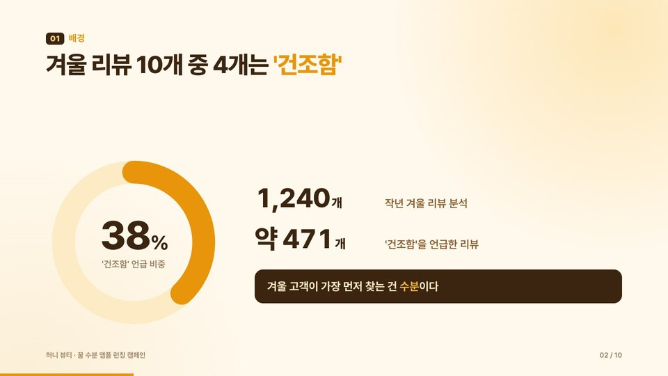
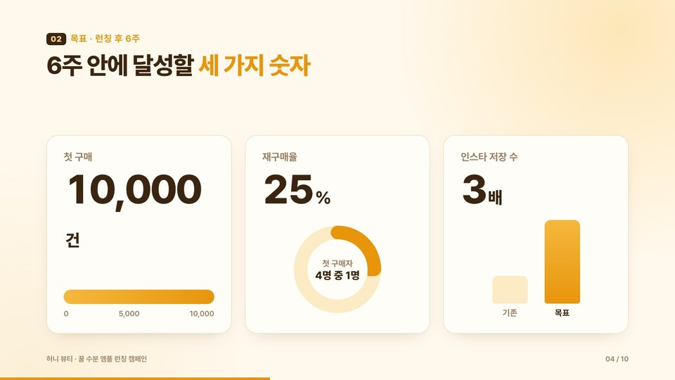
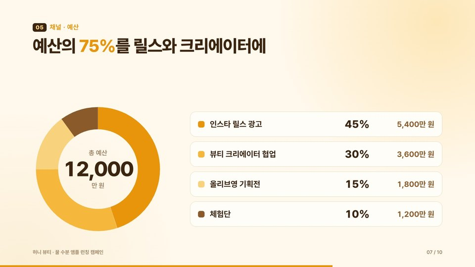
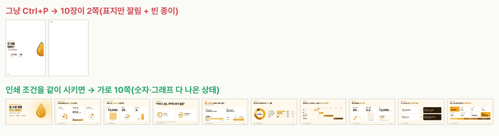

EP.25 · 모션 PPT
PPT 안 열고 만든
PPT 안 열고 만든
모션 발표 자료 10장
기획안 글을 Claude에 붙여 넣고 PPT 파일 대신 웹페이지 파일(HTML)로 달라고 했어요. 숫자가 올라가고 그래프가 그려지는 슬라이드 10장이 파일 하나로 왔고, 파워포인트는 한 번도 안 열었어요. 회의 끝나고 보낼 PDF는 인쇄 조건을 같이 시키면 가로 10쪽으로 나와요.
01요청문 전체
맨 아래 칸에 내 기획안 글을 그대로 붙여 넣어요. 장 수 · 화면 비율만 바꿔 써도 돼요.
복사해서 Claude에 붙여 넣기
아래 기획안으로 내일 회의에서 발표할 슬라이드 10장을 만들어 줘. - HTML 파일 하나, 16:9 - 장마다 제목·숫자·그래프가 순서대로 움직이며 나오게(숫자는 올라가고 그래프는 그려지게) - 방향키로 넘기고, F 키로 전체 화면 - Ctrl+P로 인쇄하면 움직임 없이 다 나온 상태로, 한 페이지에 한 장씩 가로로 나오게 [여기에 기획안 글 붙여 넣기]
핵심은 'HTML 파일 하나'예요. PPT 파일로 달라고 하면 움직임을 넣기 어렵지만, 웹페이지 파일은 움직임을 AI가 코드로 넣어 줘요.
이미 만든 슬라이드에 PDF 조건만 더할 때(같은 대화에 이어서)
회의 끝나고 PDF로도 보내야 해. Ctrl+P로 인쇄하면 움직임 없이 다 나온 상태로, 한 페이지에 한 장씩 10페이지 가로로 나오게 해 줘.
시연에 넣은 기획안 글 — 가상 브랜드 '허니 뷰티'
[허니 뷰티(예시 브랜드)] 꿀 수분 앰플 신제품 런칭 캠페인 기획안 1. 배경 - 작년 겨울 리뷰 1,240개 중 '건조함' 언급 38%. 기존 앰플은 "끈적임" 불만이 1위(리뷰 212개). - 20대 후반~30대 초반 직장인 여성의 저녁 스킨케어 시간은 평균 7분. 2. 목표 (런칭 후 6주) - 첫 구매 1만 건 · 재구매율 25% · 인스타 저장 수 3배 3. 핵심 메시지 - "바르고 3초, 끈적임 없이 꿀광" - 근거: 흡수 테스트 3초(자사 내부 테스트), 꿀 추출물 62% 4. 타깃 - 퇴근 후 7분 안에 스킨케어를 끝내고 싶은 직장인 - 앰플 끈적임 때문에 아침엔 안 바르는 사람 5. 채널 · 예산 (총 1억 2천만 원) - 인스타 릴스 광고 45% · 뷰티 크리에이터 협업 30% · 올리브영 기획전 15% · 체험단 10% 6. 일정 - 1주차 티저(빈 병 이미지) → 2주차 런칭 · 크리에이터 영상 공개 → 3~4주차 올리브영 기획전 → 5~6주차 리뷰 리타깃팅 7. 성과 지표 - 릴스 3초 유지율 45% 이상 · 상세페이지 전환율 3.2% · CPA 1만 2천 원 이하 8. 리스크와 대응 - 겨울 시즌 경쟁 앰플 할인 → 1+1 대신 미니 사이즈 증정 - "3초 흡수" 표현 심의 → 자사 테스트 조건 문구 같이 표기
02실제로 받은 슬라이드
Claude가 만든 파일을 그대로 연 화면이에요(장마다 다 그려진 뒤). 실제로는 제목 → 숫자(0부터 올라감) → 그래프(그려짐) 순서로 나와요.



03발표하는 법
- Claude 답의 파일 카드에서 받기(다운로드). 파일 이름 끝이 .html이에요.
- 받은 파일을 더블클릭 → 크롬 · 엣지 같은 브라우저에서 열려요.
- → / ← 방향키로 넘기고, F를 누르면 전체 화면이에요. 앞 장으로 돌아가면 움직임이 다시 나와요.
고칠 땐 PPT 말고 Claude에게
HTML 파일은 파워포인트로 열어 고치는 파일이 아니에요. "3장 제목을 ○○로 바꿔 줘", "회사 색 #○○○○○○로 맞춰 줘"처럼 같은 대화에 이어서 시켜요.
04회의 끝나고 보낼 PDF
움직이는 슬라이드를 그냥 인쇄하면 화면용으로만 만들어져 있어서 제대로 안 나와요. 시연에서 첫 파일을 그대로 인쇄하니 10장이 2쪽(왼쪽이 잘린 표지 + 빈 종이)이었어요. 인쇄 조건을 같이 시키면 가로 10쪽이 나와요.

- 브라우저에서 파일을 열고 Ctrl+P(맥은 Cmd+P).
- 대상을 PDF로 저장으로 고르고 저장해요. 용지 · 방향은 파일이 알아서 가로로 맞춰요.
- 색이 빠져 보이면 '추가 설정 → 배경 그래픽'을 켜요(시연 파일은 꺼도 색이 나왔어요).
05써 보기 전에 알아 둘 점
- AI가 기획안에 없던 숫자 · 문장을 덧붙여요. 이번엔 기획안 숫자로 계산한 값(건조함 리뷰 약 471개, 채널별 금액, CPA 1만 2천 원)과 그래프 눈금, "겨울 고객이 가장 먼저 찾는 건 수분이다" 같은 소제목을 넣었어요. Claude도 답 끝에 "발표 전에 확인해 주세요"라고 적어 줬어요. 숫자는 꼭 한 번 보세요.
- 글꼴은 인터넷에서 불러와요. 회의실 PC가 오프라인이면 다른 글꼴(맑은 고딕)로 바뀌어 보일 수 있어요.
- 발표 중에 내용을 고치면 PDF는 다시 뽑아요. 두 파일이 따로 움직이지 않아요.
- 같은 요청이어도 디자인 · 구성은 매번 조금씩 달라요(시연 두 번 모두 10장 · 꿀색 톤이었지만 장 구성이 달랐어요).
06어떻게 시험했나
- 2026-10-31 · claude.ai(Opus 5.5). 위 기획안 글 + 요청문으로 새 대화를 두 번 했어요.
- 1회차: 인쇄 조건 없이 요청 → 같은 대화에 PDF 조건 한 마디를 더함. 2회차: 인쇄 조건까지 넣은 요청문 한 번에.
- 인쇄는 받은 파일을 크롬 인쇄(A4 기본 설정)로 PDF 저장해서 확인했어요. 1회차 첫 파일은 2쪽, 조건을 더한 뒤와 2회차는 가로 10쪽이었어요. 한글 글꼴은 안 깨졌어요.
- 발표 모드(방향키 넘기기 · F 전체 화면)는 받은 파일을 브라우저로 열어 확인했어요.
07출처
- 2026-10-31 Claude로 직접 만든 결과예요. 소재는 가상 브랜드 '허니 뷰티'예요.
- 썸네일 사진은 AI로 만들었어요.
실무에서 바로 쓰는 AI 활용법, 하나씩 올려요.
대행사에서 AI 교육하는 현직 마케터가 직접 써 보고 정리해요.
인스타에서 팔로우